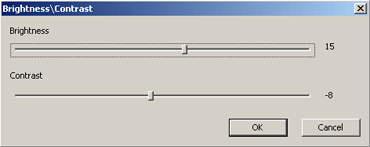

<!--#include virtual="../template1"-->Простые растровые операции<!--#include virtual="../template2"-->
<!--#include virtual="./menu"-->
<!--#include virtual="../template3"-->

<h1 align=center>Простые растровые операции</h1>

<b>Авторы:</b> <a href="http://forum.sources.ru/index.php?showuser=10169">Мяут</a> и <a href="http://forum.sources.ru/index.php?showuser=9930">orb</a>

<p>Все существующие графические объекты можно разделить на два типа: векторные и растровые.</p>

<p>Векторные объекты обычно описываются координатами и математическими формулами.</p>
<p>Самые распространенные программы для работы с объектами этого типа - Corel Draw и Adobe Illustrator.</p>
<p>Основные преимущества векторной графики:</p>
<ul>
 <li>изменение масштаба без потери качества;</li>
 <li>зависимость размера файла от количества объектов, а не от размера холста.</li>
</ul>
<p>Основной недостаток - чем больше объектов, тем больше требуется вычислительной мощности компьютера для работы с ними.</p>

<p>Растровые файлы представляют собой массив точек, для каждой из которых задается значение цвета.</p>
<p>Самые распространенные программы для работы с растровой графикой - Adobe Photoshop, Corel PhotoPaint и GIMP.</p>
<p>Основное преимущество использования растровой графики - любой объект можно перевести в растровый формат.</p>
<p>Основные недостатки:</p>
<ul>
 <li>размер файла зависит от размера холста;</li>
 <li>большой объем оперативной памяти и вычислительной мощности, необходимый для обработки растровых файлов;</li>
 <li>увеличение рисунка всегда сопровождается потерей качества.</li>
</ul>

<p>Рассмотрим изнутри работу некоторых функций и фильтров графических редакторов растровой графики.</p>
<p>Первое, что нам нужно -  это разместить файлы в памяти компьютера для того, чтобы вывести их на экран и редактировать. Работать мы будем с файлом формата BMP (Windows Bitmap), который имеет 24 бита на цвет.</p>
<p>Файл состоит из четырех разделов: заголовок файла, заголовок растра, палитра цветов (в данном примере палитры не будет) и растровые данные.</p>
<p>Нужные нам данные сохраним в структурах:</p>
<pre class="code">
LPBITMAPINFO pPicInfo; 	//заголовок растра
BYTE *pPicture;		     //растровые данные (картинка)
</pre>

<p><b>Загрузка файла:</b></p>
<pre class="code">
BOOL PicLoad(CString sFileName)	//передается имя рисунка
{
	BITMAPFILEHEADER FileHead; 	  //заголовок файла
	CFile oFile;
	if(!oFile.Open(sFileName, CFile::modeRead))
		return(FALSE);
	oFile.Read(&FileHead, sizeof(BITMAPFILEHEADER));
	if(FileHead.bfType!=0x4D42) 	  //проверка: является ли файл рисунком в BMP формате
	{
		oFile.Close();
		return(FALSE);
	}
	oFile.Seek(sizeof(BITMAPFILEHEADER), CFile::begin);
	if((pPicInfo=(LPBITMAPINFO)new BYTE[FileHead.bfOffBits-sizeof(BITMAPFILEHEADER)])==NULL)
	{
		oFile.Close();
		return(FALSE);
	}
	oFile.Read(pPicInfo, FileHead.bfOffBits-sizeof(BITMAPFILEHEADER)); 	//считывание заголовка растра в только что выделенную память
	if(pPicInfo->bmiHeader.biCompression!=0) 	//поскольку программа учебная, мы работаем только с несжатыми файлами
	{
		oFile.Close();
		return(FALSE);
	}
	oFile.Seek(FileHead.bfOffBits, CFile::begin);
	iBytePerLine=((GetPicWidth()*pPicInfo->bmiHeader.biBitCount+31)>>5)<<2; 	//вычисляется количество байт на 1 линию
	if(pPicInfo->bmiHeader.biSizeImage==0) 	//если в файле не задан размер, корректируем это упущение
		pPicInfo->bmiHeader.biSizeImage=iBytePerLine*GetPicHeight();
	pPicture=new BYTE[pPicInfo->bmiHeader.biSizeImage]; 	//выделяем память под сами растровые данные
	if(pPicture==NULL)
	{
		oFile.Close();
		return(FALSE);
	}
	oFile.Read(pPicture, pPicInfo->bmiHeader.biSizeImage); 	//загружаем картинку в память
	oFile.Close();
	return(TRUE);
}
</pre>

<p>В памяти картинка расположена точка за точкой, начиная с верхнего левого угла вправо, далее вторая строка, третья, ..., до правого нижнего угла. Каждая точка представлена тремя байтами, каждый байт - это интенсивность цвета от 0 до 255. Первый байт - это B (Blue-синий), G (Green-зеленый) и R (Red-красный). В формате BMP каждая стока должна быть описана целым числом двойных слов, это должно быть учтено, информация в этих байтах может быть любой, поскольку она нигде не используются.</p>

<h2>Вывод изображения на экран</h2>
<p>Забегая вперед, уточним, что для работы некоторых фильтров необходимо две области памяти, одна с оригиналом рисунка, другая - буфер для результата применения фильтра. Принимая этот факт к рассмотрению, нужно организовать два буфера для изображения и указатель на память, в которой находиться текущая картинка. Таким образом, у нас уже организовалась возможность отмены действия, и если результат применения фильтра нам не нравится, мы просто присваиваем указателю на текущую картинку значение области памяти с исходным изображением. Отменить таким образом можно только одно действие, повторная отмена действия опять поменяет местами результат и источник. Для реализации множественной отмены нужно создать несколько буферов, используя массивы (в том числе динамические).</p>
<p>Для вывода используем стандартную функцию StretchDIBits</p>
<pre class="code">
//режим вывода изображения
int iOldStretchMode=SetStretchBltMode(hdc, COLORONCOLOR);
//вывод изображения в контекст устройства hdc с сохранением пропорций
StretchDIBits(hdc, 0, 0, GetPicWidth(), GetPicHeight(), 0, 0, GetPicWidth(), GetPicHeight(), pPicture, pPicInfo, DIB_RGB_COLORS, SRCCOPY);
</pre>

<h2>Точечные преобразования</h2>
<p>Рассмотрим графические фильтры. Их можно разделить на две категории:</p>
<p><i>точечные</i> - новое значение элемента рассчитывается на основании его старого значения;</p>
<p><i>пространственные</i> - при расчете учитывается старое значение пиксела, а также значения близлежащих пикселов.</p>
<p>Более подробное рассмотрение начнем с точечных фильтров, как с наиболее простых.</p>

<h2>Расчет "Гистограммы яркости"</h2>
<p>Гистограмма - это график частоты появления точек различных степеней яркости. Гистограмма предназначена для определения распределения яркости в изображении и более равномерного распределения.</p>
<p>По оси Х расположена интенсивность яркости от 0 (светлые тона) до 255 (темные тона), по оси Y частота появления. Для изображения в градациях черного необходимо посчитать частоту появления точек всех яркостей и вывести на экран эти значения (в процентах).</p>
<p>Для цветного изображения каждый цвет имеет разный весовой коэффициент и рассчитывается по формуле</p>
<div class="info">Brightness = 0.3*Red + 0.59*Green + 0.11*Blue</div>

<h2>Расчет гистограммы</h2>
<pre class="code">
//pHistogram[iX] - массив, в котором хранятся значения яркостей
//Перед расчетом нужно его обнулить, потому что точек с каким-то значением яркости может и не быть
for(int iX=0; iX<256; iX++)	pHistogram[iX]=0;
//перебирая все точки рисунка подряд, рассчитываем значение яркости, которое имеет текущая точка,
//это значение есть № ячейки массива, значение которой мы увеличиваем на единицу
BYTE *pCurrPixel=NULL;	//указатель на текущий пиксель
for(int iY=0; iY<GetPicHeight(); iY++)
	for(iX=0; iX<GetPicWidth(); iX++)
	{
		pCurrPixel=pPicture+iY*iBytePerLine+iX*3;	//не забываем о iBytePerLine
		pHistogram[(BYTE)(0.11*(*pCurrPixel)+0.59*(*(pCurrPixel+1))+ 0.3*(*(pCurrPixel+2)))]+=1;
	}
//теперь выводим на экран гистограмму
//по оси Х - яркость, от 0 до 255
//по оси Y - частота появления
CRect oFrameRect;		//прямоугольник, в который выводим гистограмму
DWORD iMaxBright=0, iSumBright=0;
for(int i=0; i<256; i++)
	iSumBright+=pHistogram[i];
iMaxBright=3*iSumBright/256;	//максимальное значение яркости, которое будет отображать гистограмма
double kx=((double)oFrameRect.Width())/256.0;	     //коэффициент масштаба по Х
double ky=((double)oFrameRect.Height())/iMaxBright;	//коэффициент масштаба по Y
int x=0, y=0;
for(i=0; i<256; i++)	//выводим слева направо
{
	x=oFrameRect.left+(int)(kx*i+0.5);	//рассчитываем координаты относительно области вывода
	y=oFrameRect.bottom;
	pDC->MoveTo(x, y);
	y=oFrameRect.bottom-(int)(ky*pHistogram[i]+0.5);
	if(y<oFrameRect.top)
		y=oFrameRect.top;
	pDC->LineTo(x, y);	//длина линии соответствует частоте появления текущей (i) яркости
}
</pre>

<h2>Корректировка диапазона яркости</h2>
<p>После того, как мы видим гистограмму фотографии, мы можем подкорректировать диапазон яркости картинки. Для примера посмотрим на фотографию пловца (<a href="./paint/Swim1.jpg">Swim1.jpg</a>). Также здесь мы видим гистограмму яркости. Проведем небольшую коррекцию, растянув диапазон яркости. На фотографии видно слева уменьшаем диапазон на 37 единиц, а справа на 25. Это значит, что все точки с яркостью до 37 теперь будут абсолютно белыми, а точки с яркостью большей 230 (25 это значение с обратной стороны, т.е. -25, поэтому 255-25=230) станут абсолютно черными, весь диапазон между ними мы равномерно растягиваем на всю шкалу (от 0 до 255). Вот результат и гистограмма новой фотографии (<a href="./paint/Swim2.jpg">Swim2.jpg</a>).</p>

<p>От теории к практике.</p>

<p>Вызываем диалоговое окно, в котором пользователь корректирует диапазон и нажимает ОК. В результате у нас есть два значения</p>
<pre class="code">
int iOffset_b;	//смещение в светлых тонах
int iOffset_t;	//смещение в темных тонах

int iOffset_256=256-iOffset_t;	//т.к. в диалоге мы получаем значение - на сколько сместить от 255

//все что за диапазоном доводим до максимума. Для светлых тонов - максимально светлый - 0,
//для темных максимально темный - 255
for(int ix=0; ix<iOffset_b; ix++)
	RGBTransformTable[0][ix]=RGBTransformTable[1][ix]=RGBTransformTable[2][ix]=0;
for(int ix=255; ix>=iOffset_256; ix--)
	RGBTransformTable[0][ix]=RGBTransformTable[1][ix]=RGBTransformTable[2][ix]=255;
</pre>

<p>BYTE RGBTransformTable[color][index] - это таблица преобразования цветов, которая, представлена двухмерным массивом.</p>
<p>Color - определяет цвет, для которого мы хотим получить новое значение. У нас цветов три - RGB и, соответственно, размерность равна трем.</p>
<p>Index - это индекс в массиве, который определяет ячейку, в которой храниться новое значение яркости.</p>
<p>Т.е. допустим, мы хотим применить некоторое изменение яркости по значениям, которые записаны в таблице преобразования. Берем точку с координатами (0, 0) и смотрим, какую она имеет яркость, например, R=36, G=89, B=231. Новые значения яркости берем из таблицы преобразования:</p>
<p>В красный цвет записываем значение из ячейки RGBTransformTable[0][36],</p>
<p>зеленый - RGBTransformTable[1][89],</p>
<p>синий - RGBTransformTable[2][231].</p>
<p>Дальше изменяем остальные точки. В этой части кода нам понадобиться функция, которая, получая координаты точки, будет возвращать его адрес. Это функция</p>
<pre class="code">
BYTE *GetPixel(LONG x, LONG y)
{
	return(pPicture+(iBytePerLine*y+x*pPicInfo->bmiHeader.biBitCount/8));
}
</pre>

<p>Теперь перебираем последовательно все точки и изменяем значение яркости pSourcePic - указатель на картинку источник (фотография, к которой мы применяем фильтр), pDestPic - буфер, в который мы помещаем результат.</p>
<pre class="code">
BYTE *pDestPixel=NULL, *pSourPixel=NULL;
for(int  y=0; y<pSourcePic->GetPicHeight(); y++)
	for(int x=0; x<pSourcePic->GetPicWidth(); x++)
	{
		pDestPixel=pDestPic->GetPixel(x, y);
		pSourPixel=pSourcePic->GetPixel(x, y);
		*pDestPixel=RGBTransformTable[0][*pSourPixel];
		*(pDestPixel+1)=RGBTransformTable[0][*(pSourPixel+1)];
		*(pDestPixel+2)=RGBTransformTable[0][*(pSourPixel+2)];
	}
</pre>

<p>Думаю, что с назначением массива RGBTransformTable[][] все понятно. Осталось только его заполнить, т.к. теорию мы уже рассмотрели, код заполнения не должен вызвать трудности.</p>
<pre class="code">
//равномерно растягиваем диапазон яркости от iOffset_b до iOffset_256
double fStep=256.0/((double)(256-(iOffset_b+iOffset_t)));
double fCol=0.0;
for(int ix=iOffset_b; ix&lt;iOffset_256; ix++)
{
	RGBTransformTable[0][ix]=RGBTransformTable[1][ix]=RGBTransformTable[2][ix]=(int)(fCol+0.5);
	fCol+=fStep;
}
</pre>

<p>Как уже говорилось выше, после применения фильтров результат, находящийся в буфере, необходимо вывести на экран. Теперь адрес pSourcePic указывает не на картинку, а на буфер, в который мы будем помещать результат следующих трансформаций, а pDestPic - указывает на картинку-оригинал (Undo - меняет эти значения местами).</p>

<h2>Фильтр "Инверсия цветов"</h2>
<p>Это самый простой фильтр, как в понимании, так и в реализации. Он изменяет цвета на противоположные, если точка была белой - меняем на черную.</p>
<p>Фильтр "Инверсия цветов" реализуется также посредством таблицы преобразования, только заполняется эта таблица другим методом.</p>
<pre class="code">
for(int ix=0; ix<256; ix++)
{
	RGBTransformTable[0][ix]=255-ix;
	RGBTransformTable[1][ix]=255-ix;
	RGBTransformTable[2][ix]=255-ix;
}
</pre>

<p>Смена цвета каждой точки ничем не отличается от рассмотренного в "Корректировке диапазона яркости".</p>

<h2>Фильтр изменения "Яркости/Контраста"</h2>
<p>Изменение яркости заключается в увеличении или уменьшении интенсивности всех пикселей на заданное значение (одинаковое для всех каналов).</p>
<p>Значения, на которые нам нужно изменить яркость и контрастность, мы получаем из диалогового окна</p>
<div align="center"></div>
<pre class="code">
for(ix=0; ix<256; ix++)
{
	ibx=ix+iBrigh;	//увеличение на iBrigh единиц, может быть как положительным, так и отрицательным
	if(ibx > 255)
	{
		RGBTransformTable[0][ix]=255;
		RGBTransformTable[1][ix]=255;
		RGBTransformTable[2][ix]=255;
	}
	else 
		if(ibx < 0)
		{
			RGBTransformTable[0][ix]=0;
			RGBTransformTable[1][ix]=0;
			RGBTransformTable[2][ix]=0;
		}
		else
		{
			RGBTransformTable[0][ix]=ibx;
			RGBTransformTable[1][ix]=ibx;
			RGBTransformTable[2][ix]=ibx;
		}
}
</pre>

<p>С контрастом дело обстоит немного сложнее. Заполнение таблицы преобразования будем делать, исходя из "серой середины"</p>
<pre class="code">
#define MEDIUM_CONTRAST 159
</pre>

<p>Значение 159 больше среднего арифметического (127). Это значение ближе к понятию "серый цвет", чем RGB(127, 127, 127) - темно-серый и RGB(200, 200, 200) - светло-серый. Со значением RGB(159, 159, 159) достигается более реалистичный эффект.</p>
<p>Чтобы откорректировать контраст, сначала сместим яркость на нужную величину, а затем либо "сжатие", любо "растяжение" диапазона яркости. При "сжатии"  диапазона яркости значения будут изменяться не равномерно, а пропорционально их удаленности от "серой середины". "Растяжение" сделано аналогично за исключением того, что смещение по шкале яркости сверху и снизу одинаково.</p>
<pre class="code">
#define MEDIUM_CONTRAST 159
int ix=0, iIndexT=0, iIndexB=0, iColorOffset=0, ibx, iLimitB, iLimitT;
double fCol=0.0, fStep;
if(iContrast<0)	// iContrast - значение, на которое корректируем контраст
{
	for(ibx=0; ibx<3; ibx++)	//последовательно перебираем все каналы
		for(ix=0; ix<256; ix++)
			if(RGBTransformTable[ibx][ix]<MEDIUM_CONTRAST)
			{
				iColorOffset=(MEDIUM_CONTRAST-RGBTransformTable[ibx][ix])*iContrast/128;
				if((RGBTransformTable[ibx][ix]-iColorOffset) > MEDIUM_CONTRAST)
					RGBTransformTable[ibx][ix]=MEDIUM_CONTRAST;
				else
					RGBTransformTable[ibx][ix]-=iColorOffset;
			}else
			{
				iColorOffset=(RGBTransformTable[ibx][ix]-MEDIUM_CONTRAST)*iContrast/128;
				if((RGBTransformTable[ibx][ix]+iColorOffset) < MEDIUM_CONTRAST)
					RGBTransformTable[ibx][ix]=MEDIUM_CONTRAST;
				else
					RGBTransformTable[ibx][ix]+=iColorOffset;
			}
}else
	if(iContrast>0)
	{
		iLimitB=iContrast*MEDIUM_CONTRAST/128;
		for(ibx=0; ibx<3; ibx++)
			for(iIndexB=0; iIndexB<256; iIndexB++)
			{
				if(RGBTransformTable[ibx][iIndexB]<iLimitB)
					RGBTransformTable[ibx][iIndexB]=0;
				else break;
			}
		iLimitT=iContrast*128/MEDIUM_CONTRAST;
		for(ibx=0; ibx<3; ibx++)
			for(iIndexT=0; iIndexT<256; iIndexT++)
			{
				if((RGBTransformTable[ibx][iIndexT]+iLimitT) > 255)
					RGBTransformTable[ibx][iIndexT]=255;
				else break;
			}
		fStep=256.0/((double)(256-iLimitB+iLimitB));
		for(ibx=0; ibx<3; ibx++)
		{
			fCol=0.0;
			for(ix=iIndexB; ix<iIndexT; ix++)
			{
				if(RGBTransformTable[ibx][ix]>=iLimitB || RGBTransformTable[ibx][ix]<256-iLimitT)
				{
					fCol=(double)((int)((double)(RGBTransformTable[ibx][ix]-iLimitB)*fStep+0.5));
					RGBTransformTable[ibx][ix]=((fCol>255.0)?(255):(int)fCol);
				}
			}
		}
	}
</pre>

<p>После заполнения таблицы RGBTransformTable[][]изменяем значения всех точек, как было рассмотрено выше.</p>

<h2>Фильтр "Рельеф"</h2>
<p>Этот фильтр имеет несколько реализаций, в данной статье мы рассмотрим точечную реализацию. Результат работы фильтра можно сравнить с рисунком на "незастывшем" бетоне. Достигается такой эффект вычитанием яркости точки из яркости точки той же позиции, но смещенной на несколько пикселов в сторону и вверх (смещать можно и других направлениях). Полученная разница смещается в область серых тонов.</p>
<pre class="code">
#define EMBOSS_X 3		//задаем смещение по оси Х
#define EMBOSS_Y -3	//задаем смещение по оси Y
BYTE *pDestPix=NULL, *pSourPix1=NULL, *pSourPix2=NULL, iBr1, iBr2, iBrResult;
//(x, y) - координаты точки, для которой делаем преобразование, последовательно перебираем все точки фотографии
pDestPix=pDestPic->GetPixel(x, y);	//адрес точки в буфере (куда поместить результат)
pSourPix1=pSourPic->GetPixel(x, y); //адрес точки источника (первая точка)
pSourPix2=pSourPic->GetPixel(x+EMBOSS_X, y+EMBOSS_Y);	//адрес точки (источника), смещенной на несколько пикселей (вторая точка)
iBr1=(BYTE)(0.11*(*pSourPix1)+0.59*(*(pSourPix1+1))+0.3*(*(pSourPix1+2)));	//рассчитываем яркость для 1-ой точки
iBr2=(BYTE)(0.11*(*pSourPix2)+0.59*(*(pSourPix2+1))+0.3*(*(pSourPix2+2)));	//яркость 2-ой точки
iBrResult=(iBr1-iBr2+255)/2;		//рассчитываем яркость и смещаем ее в область серых тонов
*pDestPix=iBrResult;		       //запись результата во все три канала
*(pDestPix+1)=iBrResult;
*(pDestPix+2)=iBrResult;
</pre>

<h2>Пространственные (матричные) преобразования</h2>
<p>Последующие фильтры будут пространственными (матричными). Пространственные преобразования заключаются в нахождении свертки значений пикселов. Свертка вычисляется как сумма пиксельных значений, попавших в зону преобразования, помноженных на весовые коэффициенты. Для расчетов используется матрица:</p>
<p>размер матрицы - задает область пикселов, которые будут учитываться при преобразовании;</p>
<p>элементы матрицы - весовые коэффициенты;</p>
<p>все значения элементов матрицы - тип преобразования.</p>

<h2>Фильтр "Размытие"</h2>
<p>Расчет нового элемента можно осуществлять с использованием следующего псевдокода:</p>
<pre class="code">
int iMatrixX=5;				          //размерность 5х5
int iMatrixY=5;
const int iBlurMatrix[25]=				//Матрица для размытия:
{	1, 1, 1, 1, 1,
	1, 1, 1, 1, 1,
	1, 1, 1, 1, 1,
	1, 1, 1, 1, 1,
	1, 1, 1, 1, 1
};
const int *pMatrix=iBlurMatrix;	//указатель на матрицу

//на рассчитываемую точку указывают координаты (x, y)
//pDestPixel - адрес указывает на точку в буфере, по которому мы записываем результат
BYTE *pSourPixel=NULL;		//указатель на пиксель
int iNewPixel=0;				  //новое значение пикселя
int iSymmaCoef=0;			  //подсчет суммы коэффициентов
for(int iY=-iMatrixY/2; iY&lt;iMatrixY; iY++)
	for(int iX=-iMatrixX/2; iX&lt;iMatrixX; iX++)
	{
		pSourPixel=GetPixel(x+iX, y+iY);		//получаем адрес точки с учетом смещения
		iNewPixel = iNewPixel + (*pSourPixel)*pMatrix[iY][iX];
		iSymmaCoef= iSymmaCoef + pMatrix[iY][iX];
	}
*pDestPixel=iNewPixel/iSymmaCoef;		//записываем новое значение элемента
</pre>

<p>Этот же расчет проводим для остальных каналов, далее переходим к следующей точке.</p>
<p>Если для предыдущих операций можно было результат помещать в ту же область памяти, что и оригинал, то для матричных фильтров необходимы две области памяти.</p>

<h2>Фильтр "Контур"</h2>
<p>Работа этого фильтра происходит аналогично размытию, все, что нужно - это изменить значения матрицы и ее разрядность.</p>
<pre class="code">
#define CONTUR 3		//коэффициент четкости, можно задать в диалоговом окне
const int iConturMatrix[9]=
{ -1*CONTUR, -1*CONTUR, -1*CONTUR,
  -1*CONTUR,  8*CONTUR, -1*CONTUR,
  -1*CONTUR, -1*CONTUR, -1*CONTUR
};
pMatrix=iConturMatrix;
iMatrixX=3;		//размерность матрицы 3х3
iMatrixY=3;
</pre>

<p>Сумма элементов матрицы равна нулю. Если яркость пикселов, попавших в зону действия матрицы примерно одинакова, - результат будет близкий к нулю. А если преобразуемый пиксель имеет яркость, отличную от окружающих, - результат будет больше нуля. Результат работы всего фильтра - черное изображение с белым контуром.</p>

<h2>Фильтр "Четкость"</h2>

<p>Поскольку фильтр матричный, ему нужна матрица:</p>
<pre class="code">
pMatrix=iBlurMatrix;
iMatrixX=5;
iMatrixY=5;
</pre>

<p>В данном случае ничего не перепутано, для работы фильтра действительно нужна такая же матрица, как и при размытии. Фильтр "Четкость" иллюстрирует собой борьбу противоположностей. Для повышения четкости картинки нужно сначала размыть изображение, а потом вычислить разность между размытым изображением и оригиналом, на величину этой разности изменяется разность оригинала. В результате однородные участки изменятся незначительно, а высокочастотные участки изображения станут более контрастными.</p>
<pre class="code">
#define SHARP 3		//коэффициент усиления
//
//размываем точку фильтром "Размытие", код приведен выше
//
//pSourPix - адрес точки (картинка оригинал)
//pDestPix - адрес точки (картинка после применения преобразований, буфер)
int iResult=((*pSourPix)-(*pDestPix))*SHARP;		//получаем новое значение яркости
*pDestPix= (*pDestPix) + iResult;		            //записываем новое значение
</pre>

<h2>Заключение</h2>
<p>Соберем все выше сказанное в один блок:</p>
<pre class="code">
class CPicture			//класс по работе с изображением
{
private:
	BYTE *pPicture;
	LPBITMAPINFO pPicInfo;
public:
	LONG iBytePerLine;
public:
	BOOL PicLoad(CString sFileName);		//загрузка изображения с файла
	BOOL PicSave(CString sFileName);		//запись в файл
	void PicDelete();			            //удаление картинки из памяти
	void PicDraw(CDC *pDC);			       //вывод на экран
	RGBQUAD *GetColorTable(void)		     //возвращает указатель на таблицу цветов
		{	return((LPRGBQUAD)(((BYTE*)(pPicInfo))+sizeof(BITMAPINFOHEADER))); };
	BYTE *GetPixel(LONG x, LONG y);		//адрес пикселя (x, y)
	BOOL GetHistogram(DWORD *pHistogram);		//расчет гистограммы
	LONG GetPicWidth(void)		//ширина картинки
		{	return((pPicInfo==NULL)?(0):pPicInfo->bmiHeader.biWidth);	};
	LONG GetPicHeight(void)		//высота картинки
		{	return((pPicInfo==NULL)?(0):pPicInfo->bmiHeader.biHeight);	};
	LPBITMAPINFO GetPicInfo(void)	//возвращает указатель заголовка растра
	{	return(pPicInfo);	};
	BYTE *GetPicture(void)		//возвращает указатель на растровые данные
	{	return(pPicture);	};
};
</pre>

<p>Работа фильтров во многом схожа, поэтому их вполне логично объединить</p>
<pre class="code">
class CFilter		//базовый класс
{
protected:
	CPicture *pSourPic;		//указатель на "оригинал" изображения
	CPicture *pDestPic;		//указатель на буфер, куда будет помещено изображение после преобразования
public:
	virtual BOOL TransformPix(LONG x, LONG y)		//виртуальный метод, реализация будет переопределяться
			{	return(FALSE);	};
};
</pre>

<p>Дальше фильтры делятся на два направления: точечные и матричные</p>
<pre class="code">
class CDotFilter : public CFilter			   //базовый класс точечных фильтров
{
protected:
	BYTE RGBTransformTable[3][256];	     //таблица преобразования
public:
	BOOL TransformPix(LONG x, LONG y);		//трансформация пикселя
};
BOOL CDotFilter::TransformPix(LONG x, LONG y)
{
	BYTE *pDestPixel=NULL, *pSourPixel=NULL;
	if(pSourPic==NULL)		//источник необходим
		return(FALSE);
	if(pDestPic==NULL)		//буфер не обязателен
		pDestPic=pSourPic;
	if((pDestPixel=pDestPic->GetPixel(x, y))==NULL || (pSourPixel=pSourPic->GetPixel(x, y))==NULL)
		return(FALSE);
//изменяем изображение, используя таблицу преобразования
	*pDestPixel=RGBTransformTable[0][*pSourPixel];	*(pDestPixel+1)=RGBTransformTable[0][*(pSourPixel+1)];
	*(pDestPixel+2)=RGBTransformTable[0][*(pSourPixel+2)];
	return(TRUE);
}
//------------------------------------------------
class CMatrixFilter : public CFilter		//базовый класс для матричных фильтров
{
protected:
	int iMatrixX;		       //размерность матрицы
	int iMatrixY;
	const int *pMatrix;		//указатель на матрицу
public:
	BOOL TransformPix(LONG x, LONG y);		//трансформация пикселя
};
BOOL CMatrixFilter::TransformPix(LONG x, LONG y)
{
	BYTE *pDestPixel=NULL, *pSourPixel=NULL;
	int iXStart=0, iYStart=0, iXFinish=iMatrixX, iYFinish=iMatrixY;
	if(pSourPic==NULL || pDestPic==NULL)	//источник и буфер необходимы
		return(FALSE);
    if(x-iMatrixX/2<0)
		iXStart=iMatrixX/2-x;
	if(y-iMatrixY/2<0)
		iYStart=iMatrixY/2-y;
	if(x+iMatrixX/2>pSourPic->GetPicWidth())
		iXFinish-=(x+iMatrixX/2-pSourPic->GetPicWidth());
	if(y+iMatrixY/2>pSourPic->GetPicHeight())
		iYFinish-=(y+iMatrixY/2-pSourPic->GetPicHeight());
	int iNewRGB[3], iCount, c, iX, iY;
	for(c=0; c<3; c++)			//расчет для всех каналов цвета
	{
		iNewRGB[c]=0;
		iCount=0;
		for(iY=iYStart; iY<iYFinish; iY++)
			for(iX=iXStart; iX<iXFinish; iX++)
			{
				if((pSourPixel=pSourPic->GetPixel(x+(iX-iMatrixX/2), y+(iY-iMatrixY/2)))!=NULL)
				{		//свертывает яркость точки
					iNewRGB[c]+=(pMatrix[iY*iMatrixX+iX]*(*(pSourPixel+c)));
					iCount+=pMatrix[iY*iMatrixX+iX];
				}
			}
	}
    pDestPixel=pDestPic->GetPixel(x,y);
	for(c=0; c<3; c++)
	{
		if(iCount!=0)
			iNewRGB[c]=iNewRGB[c]/iCount;
		if(iNewRGB[c]<0)
			iNewRGB[c]=0;
		else
			if(iNewRGB[c]>255)
				iNewRGB[c]=255;
		*(pDestPixel+c)=iNewRGB[c];		//записываем новое значение яркости
	}
	return(TRUE);
}
</pre>

<h3>Точечные фильтры</h3>
<pre class="code">
class CHistogram : public CDotFilter		//гистограмма
{
public:
	BOOL Init(int iOffset_b, int iOffset_t);
};//------------------------------------------------
class CBrightContrast : public CDotFilter		//яркость/контраст
{
public:
	BOOL Init(int iBrigh, int iContrast);
};//------------------------------------------------
class CInvertColor : public CDotFilter		//инверсия
{
public:
	CInvertColor();		//инициализация таблицы преобразования
};//------------------------------------------------
class CEmboss : public CDotFilter			//рельеф
{
public:
	BOOL TransformPix(LONG x, LONG y);
};
class CToGrayscale : public CDotFilter		//перевод в градации серого
{
public:
	BOOL TransformPix(LONG x, LONG y);
};
</pre>

<h3>Матричные фильтры</h3>
<pre class="code">
class CBlur : public CMatrixFilter		//размытие
{
public:
	CBlur();
};//------------------------------------------------
class CContur : public CMatrixFilter		//контур
{
public:
	CContur();
};//------------------------------------------------
class CSharp : public CMatrixFilter		//четкость
{
public:
	CSharp();
	BOOL TransformPix(LONG x, LONG y);
};
</pre>

<h3>Вызов фильтров</h3>
<p>Заведем переменную CFilter *pCurrentFilter, которая будет указывать на активный фильтр. Когда пользователь выбирает нужный ему фильтр из меню, программа помещает адрес этого фильтра в переменную pCurrentFilter и вызывает функцию:</p>
<pre class="code">
void CPainterDoc::Transform(void)
{
	//CPicture *pSourcePic; - адрес оригинала картинки
	//CPicture *pDistancePic; - адрес буфера
	LONG x, y;
	for(y=0; y<pSourcePic->GetPicHeight(); y++)		//перебираем последовательно все точки
		for(x=0; x<pSourcePic->GetPicWidth(); x++)
			pCurrentFilter->TransformPix(x, y);				//вызов функции преобразования для текущего фильтра
	SetModifiedFlag();		//после преобразования устанавливаем флаг, картинка изменена
}
</pre>

<!--#include virtual="../template4"-->
